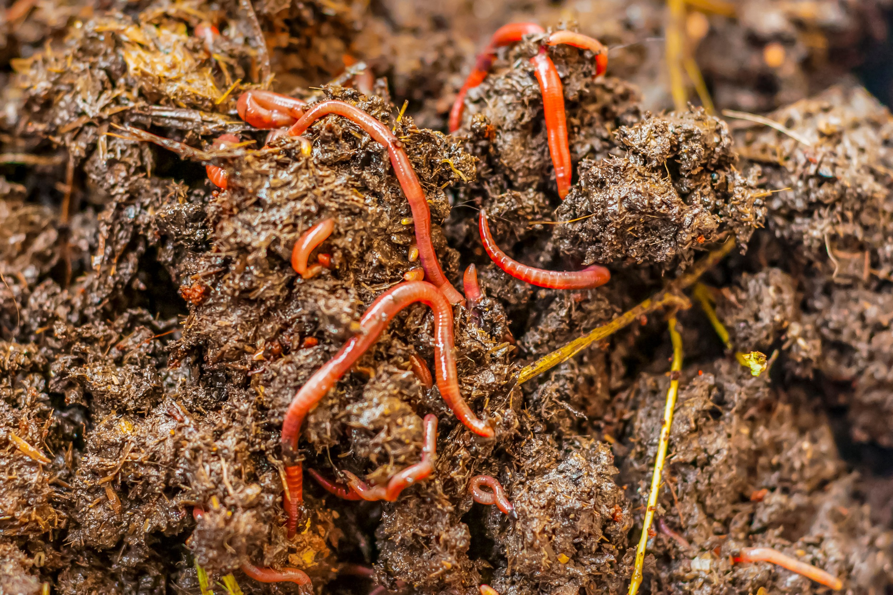

Esse site faz parte de um projeto escolar! cuja finalidade é
incentivar e também mostrar como e quais materiais
podem ou não serem reutilizados/reciclados.
Reconhecendo a importância da conscientização ambiental, buscamos fornecer informações claras e acessíveis para que todas as
pessoas possam tomar decisões informadas sobre o descarte correto de
resíduos e contribuir com a preservação do meio ambiente.
Materiais Que Podem Ser Reciclados:
Nem todos os materiais podem ser reciclados, mas neste primeiro
momento iremos ver quais podem e devem ser
reciclados. Abaixo segue a lista desses materiais:
Azul - Papel e
Papelão
Vermelho
- Plástico
Verde - Vidro
Amarelo - Metais
Marrom
- Resíduos Orgânicos
Preto - Madeira
Como Podemos Reciclar os Resíduos Orgânicos?
A reciclagem de resíduos orgânicos, conhecida como compostagem, envolve separar os resíduos orgânicos dos demais tipos de resíduos e submetê-los a um processo de decomposição controlada. Durante a compostagem, microrganismos decompõem os materiais orgânicos, resultando em composto orgânico, um adubo rico em nutrientes. Esse composto pode ser usado para fertilizar o solo, melhorando sua qualidade, aumentando a retenção de água e reduzindo a necessidade de fertilizantes químicos. A reciclagem de resíduos orgânicos reduz a quantidade de resíduos enviados para aterros sanitários, evita a liberação de gases de efeito estufa e promove a saúde do solo e a biodiversidade microbiana.
Tempo de Decomposição dos Resíduos Orgânicos:
O tempo necessário para a decomposição dos resíduos orgânicos pode variar dependendo das condições ambientais e dos próprios materiais orgânicos. Em geral, os resíduos orgânicos podem levar de algumas semanas a vários meses para se decompor completamente. Aqui estão alguns exemplos aproximados de tempo de decomposição para diferentes tipos de resíduos orgânicos:
Cascas de frutas e vegetais: De 2 a 4 semanas.
Folhas secas: De 2 a 6 meses.
Papel e papelão: De 2 a 5 meses.
Restos de comida: De 1 mês a 6 meses.
Palitos de madeira: De 6 meses a 2 anos.
Tecidos de algodão: De 6 meses a 5 anos.
Cascas de ovos: De 6 meses a 2 anos.
É importante ressaltar que esses tempos são apenas estimativas, e podem variar dependendo das condições de temperatura, umidade e presença de microrganismos. A compostagem adequada, que envolve a criação de condições ideais para a decomposição, pode acelerar o processo. Além disso, a presença de minhocas ou outros organismos decompositores também pode acelerar a decomposição dos resíduos orgânicos.
Como Podemos Reutilizar os Resíduos Orgânicos?
Existem várias maneiras eficientes de reutilizar os resíduos orgânicos. A compostagem doméstica é uma opção popular, onde você pode transformar restos de alimentos e outros materiais orgânicos em composto nutritivo para o solo. Isso pode ser feito em pilhas de compostagem ou em composteiras específicas, permitindo que você utilize o composto resultante em seu jardim, horta ou vasos de plantas. Outra opção é doar os resíduos orgânicos para jardins comunitários, onde são utilizados como adubo, fortalecendo a comunidade e reduzindo a quantidade de resíduos enviados para aterros sanitários.
Além disso, os resíduos orgânicos podem ser aproveitados como alimento para animais, como porcos, galinhas ou minhocas. Antes de usar essa opção, é importante verificar as regulamentações locais e garantir a segurança dos resíduos orgânicos para os animais. Outra possibilidade é utilizar os resíduos orgânicos na produção de energia renovável. Através da digestão anaeróbica, os resíduos orgânicos são decompostos em biogás, que pode ser utilizado para gerar eletricidade, calor ou biocombustível. Essa forma de reutilização promove a sustentabilidade e reduz as emissões de gases de efeito estufa.

A vermicompostagem é outra opção interessante, que envolve a utilização de minhocas para decompor os resíduos orgânicos. As minhocas se alimentam dos resíduos e produzem um composto conhecido como vermicomposto, rico em nutrientes. Esse vermicomposto pode ser utilizado como adubo natural em jardins, vasos de plantas e hortas. Reutilizar os resíduos orgânicos de forma inteligente não só reduz o desperdício, mas também contribui para a saúde do solo, a promoção da biodiversidade e a criação de um ambiente mais sustentável.